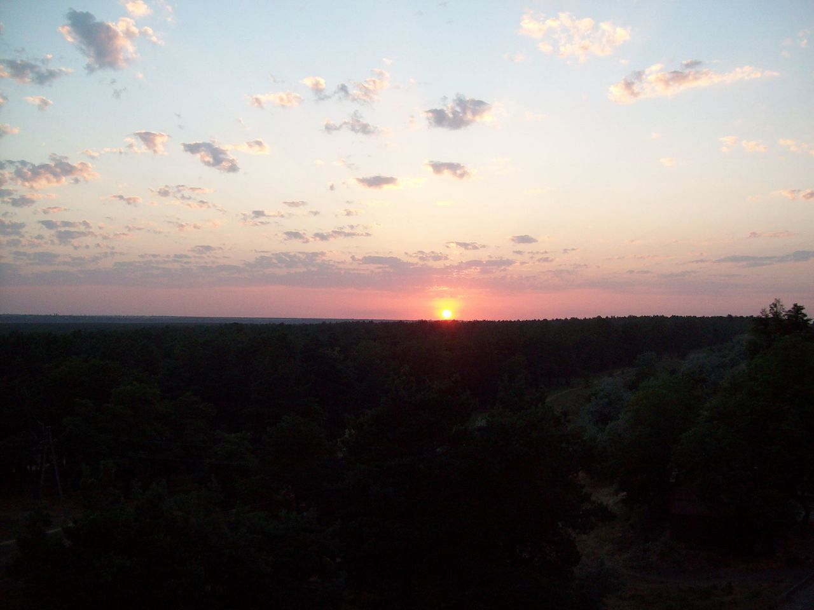

Загальний опис
Сонце — типова зоря головної послідовності спектрального класу G2. Воно майже ідеально сферичне і являє собою гарячу плазму, сплетену магнітними полями[16]. При діаметрі приблизно 1.3 млн км, що в 109 разів більше, ніж земний, має масу близько 2 × 1030 кг, що більше земної приблизно в 330 000 разів. Джерелом енергії Сонця є термоядерні реакції в його ядрі. Земля та сім інших планет обертаються навколо Сонця. Крім них, навколо Сонця обертаються комети, астероїди, метеороіди, космічний пил та інші дрібні об'єкти. Маса Сонця становить 99,866 % від загальної маси всієї Сонячної системи[17]. Сонячне випромінювання підтримує життя на Землі (фотони необхідні для початкових стадій процесу фотосинтезу) та визначає клімат нашої планети[18]. Сонце складається з водню (~73 % від маси і ~92 % від об'єму), гелію (~ 25 % від маси і ~ 7 % від об'єму) та інших елементів з меншою концентрацією (менше 2 % від маси) — заліза, нікелю, кисню, азоту, кремнію, сірки, магнію, вуглецю, неону, кальцію та хрому. Середня густина Сонця становить 1400 кг/м³. Температура поверхні Сонця становить близько 6000 К[19]. Сонце світить майже білим світлом, але через сильніше розсіювання і поглинання короткохвильової частини спектра атмосферою Землі пряме світло Сонця біля поверхні нашої планети набуває певного жовтого відтінку. Якщо небо ясне, то блакитний відтінок розсіяного світла складається з жовтуватим прямим сонячним світлом і загальне освітлення об'єктів на Землі стає білим.
Сонячний спектр містить лінії іонізованих та нейтральних металів, а також іонізованого водню. У нашій Галактиці налічується понад 100 млрд зірок. При цьому 85 % зірок нашої галактики — це зірки, менші за Сонце (здебільшого — червоні карлики). Як і всі зорі головної послідовності, Сонце виробляє енергію шляхом термоядерного синтезу.
У Сонця переважна частина енергії виробляється при синтезі гелію з водню. Відстань Сонця від Землі — близько 149,6 млн км, приблизно дорівнює астрономічній одиниці, а видимий кутовий діаметр, як і в Місяця — трохи більше пів градуса (31-32 мінути). Сонце перебуває на відстані близько 26 000 світлових років від центру «Чумацького Шляху» й обертається навколо нього з періодом близько 220 млн років.
Характеристики та хімічний склад Сонця
Сонце — центральне і наймасивніше тіло Сонячної системи. Його маса приблизно в 333 000 раз більша за масу Землі та у 750 разів перевищує масу всіх інших планет, разом узятих. Сонце — потужне джерело енергії, яку воно постійно випромінює в усіх ділянках спектра електромагнітних хвиль — від рентгенівських і ультрафіолетових променів до радіохвиль. Це випромінювання сильно впливає на всі тіла Сонячної системи: нагріває їх, позначається на атмосферах планет, дає світло й тепло, необхідні для життя на Землі.
Спектральний клас Сонця
Водночас Сонце — найближча до нас зоря, в якої, на відміну від усіх інших зірок, можна спостерігати диск, і за допомогою телескопа вивчати на ньому дрібні деталі, розміром до кількох сотень кілометрів. Це типова зоря, тому її вивчення допомагає зрозуміти природу зірок взагалі. За зоряною класифікацією Сонце має спектральний клас G2V. У поширеній літературі Сонце досить часто класифікують як жовтий карлик.
Діаметр
Видимий кутовий діаметр Сонця дещо змінюється через еліптичність орбіти Землі. У середньому він становить близько 32' або 1/107 радіана, тобто діаметр Сонця дорівнює 1/107 а.о., або приблизно 1 400 000 км. Згідно з останніми спостереженнями НАСА, радіус Сонця становить 696 342 км із похибкою 65 км.
Хімічний склад
Хімічний склад (за кількістю атомів) визначено з аналізу сонячного спектра:
- водень становить близько 90 %,
- гелій — 9,88 %,
- інші елементи — порядку 0,1 %, зокрема: на 1 млн атомів водню припадає 851 атом кисню, 398 вуглецю, 123 неону, 100 азоту, 47 заліза, 38 магнію, 35 кремнію, 16 сірки, 4 аргону, 3 алюмінію, по 2 атоми нікелю, натрію і кальцію, а також зовсім небагато всіх інших елементів.
Речовина Сонця дуже іонізована, тобто атоми втратили свої зовнішні електрони й разом з ними стали вільними частинками іонізованого газу — плазми.
Густина та температура
Середня густина сонячної речовини ρ ≈ 1400 кг/м³. Це значення близьке до густини води та в 1000 разів більше густини повітря біля поверхні Землі. У зовнішніх шарах Сонця густина в мільйони разів менша, а в центрі — у 100 раз більша за середню.
Обчислення, які враховують зростання густини й температури до центра, показують, що в центрі Сонця густина становить близько 1,5×105 кг/м³, тиск — близько 2×1018 Па, а температура — близько 15 000 000 К.
Потік енергії, що виникає в надрах Сонця, передається в зовнішні шари й розподіляється на дедалі більшу площу. Внаслідок цього температура сонячної плазми знижується з віддаленням від центра. Залежно від температури й характеру процесів, що нею визначаються, Сонце можна умовно поділити на 4 частини:
- внутрішня, центральна частина (ядро), де тиск і температура забезпечують перебіг ядерних реакцій; вона простягається від центра на відстань приблизно 1/3 радіуса;
- промениста зона (відстань від 1/3 до 2/3 радіуса), в якій енергія передається назовні внаслідок послідовного поглинання і випромінювання квантів електромагнітної енергії;
- конвективна зона — від верхньої частини «променистої» зони майже до видимої поверхні Сонця. Тут температура швидко зменшується з наближенням до видимої поверхні світила, внаслідок чого збільшується концентрація нейтральних атомів, речовина стає прозорішою, променисте перенесення стає менш ефективним і тепло передається здебільшого шляхом перемішування речовини (конвекція), подібно до кипіння рідини в посудині, яка підігрівається знизу;
- сонячна атмосфера, що починається відразу за конвективною зоною і сягає далеко за межі видимого диска Сонця. Нижній шар атмосфери — фотосфера, тонкий шар газів, який ми сприймаємо як поверхню Сонця. Верхніх шарів атмосфери безпосередньо (хромосфери та корони) не видно через значну розрідженість, їх можна спостерігати або під час повних сонячних затемнень, або за допомогою спеціальних приладів.
Сонячна активність і сонячні цикли
Спостерігаючи сонячні плями в телескоп, Галілео Галілей помітив, що вони пересуваються вздовж видимого диска Сонця. На цій підставі він зробив висновок, що Сонце обертається навколо власної осі. Кутова швидкість обертання світила зменшується від екватора до полюсів, точки на екваторі здійснюють повний оберт за 25 діб, а поблизу полюсів зоряний період обертання Сонця збільшується до 30 діб. Земля рухається своєю орбітою в тому ж напрямку, в якому обертається Сонце. Тому відносно земного спостерігача період його обертання більший і пляма в центрі сонячного диска знову пройде через центральний меридіан Сонця за 27 діб.
Сонячна активність
Сукупність явищ, викликаних генерацією потужних магнітних полів на Сонці, називають сонячною активністю. Ці поля проявляються у фотосфері як сонячні плями та викликають такі події, як: сонячні спалахи, генерацію потоків пришвидшених частинок, зміни рівня електромагнітного випромінювання Сонця в різних діапазонах, корональні викиди маси, збурення сонячного вітру, варіації потоків галактичних космічних променів (Форбуш-ефект) тощо.
Із сонячною активністю пов'язані також зміни геомагнітної активності (зокрема, магнітні бурі), які є наслідком збурень міжпланетного середовища, що досягають Землі, зумовлених, у свою чергу, активними явищами на Сонці.
Одним з найбільш поширених показників рівня сонячної активності є число Вольфа, пов'язане з кількістю сонячних плям на видимій півсфері Сонця. Загальний рівень сонячної активності змінюється з характерним періодом, приблизно рівним 11 років (так званий «цикл сонячної активності» або «одинадцятирічний цикл»). Цей період витримується неточно і в XX столітті був ближчим до 10 років, а за останні 300 років змінювався приблизно від 7 до 17 років. Циклам сонячної активності надають послідовні номери, з початком від умовно обраного першого циклу, максимум якого був 1761 року. 2000 року спостерігався максимум 23-го циклу сонячної активності.
Існують також варіації сонячної активності більшої тривалості. Так, у другій половині XVII століття сонячна активність і, зокрема, її 11-річний цикл були значно ослаблені (мінімум Маундера). У цю епоху в Європі відзначалося зниження середньорічних температур (так званий малий льодовиковий період), можливо, зумовлене впливом сонячної активності на клімат Землі. Існує також точка зору, що глобальне потепління до деякої міри викликано підвищенням рівня сонячної активності в другій половині XX століття. Проте, механізми такого впливу поки ще недосить зрозумілі.
Найбільша група сонячних плям за всю історію спостережень була відзначена у квітні 1947 у південній півкулі Сонця. Її максимальна довжина становила 300 000 км, найбільша ширина — 145 000 км[21]. Групу плям було добре видно неозброєним оком у вечірні години. Згідно з каталогом Пулковської обсерваторії, ця група (№ 87 за 1947 рік) проходила по видимій із Землі півсфері Сонця з 31 березня по 14 квітня 1947 року, максимальна її площа становила 6761 мчп (мільйонних часток площі півсфери Сонця), що приблизно в 36 разів більше площі поверхні Землі, а максимальна площа найбільшої плями в групі — 5055 мчп; кількість плям у групі досягала 172[22].
Сонце як змінна зоря
Оскільки магнітна активність Сонця схильна до періодичних змін, а разом з цим змінюється і його світність, його можна розглядати як змінну зорю. У роки максимуму активності Сонце яскравіше, ніж у роки мінімуму. Амплітуда змін сонячної сталої досягає 0,1 % (в абсолютних значеннях це 1 Вт/м², тоді як середнє значення сонячної постійної — 1361,5 Вт/м²)[23]. Також деякі дослідники відносять Сонце до класу малоактивних змінних зір типу BY Дракона[24][25]. Поверхня таких зір вкрита великими плямами (до 30 % від загальної площі), і, внаслідок обертання цих зір, із Землі спостерігаються зміни їх блиску. У Сонця така змінність дуже слабка.
Еволюція Сонця як зорі
Сонце є зорею третього покоління (популяції I) із високим вмістом металів, тобто, воно утворилося з речовини, яка була збагачена важкими елементами, що утворилися в надрах зір першого й другого поколінь (відповідно популяцій III і II). Поточний вік Сонця (точніше — час його існування на головній послідовності), оцінений за допомогою комп'ютерних моделей зоряної еволюції, дорівнює приблизно 4,57 млрд років. Вважається, що Сонце сформувалося приблизно 4,59 млрд років тому, коли стиснення під дією сил гравітації хмари молекулярного водню призвело до утворення зорі типу T Тельця.
Зоря такої маси, як Сонце, має перебувати на головній послідовності близько 10 млрд років. Таким чином, зараз Сонце перебуває приблизно в середині свого еволюційного шляху. На сучасному етапі в сонячному ядрі відбуваються термоядерні реакції перетворення водню на гелій. Щосекунди близько 4 млн тонн речовини перетворюється на променисту енергію, в результаті чого генерується сонячне випромінювання й потік сонячних нейтрино. Відповідно до сучасних уявлень через 4-5 млрд років воно перетвориться на червоного гіганта. У міру того, як водневе паливо в ядрі буде вигоряти, його зовнішня оболонка буде розширюватися, а ядро — стискатися й нагріватися. Приблизно через 7,8 млрд років, коли температура в ядрі досягне приблизно 100 млн К, у ньому почнеться термоядерна реакція синтезу вуглецю з гелію. На цій фазі еволюції температурні нестійкості всередині Сонця призведуть до того, що воно почне втрачати масу й скидати оболонку. Зовнішні шари Сонця на той час досягнуть сучасної орбіти Землі. Дослідження показують, що ще до того часу втрата Сонцем маси призведе до того, що Земля перейде на більш віддалену від Сонця орбіту і, таким чином, уникне поглинання зовнішніми шарами сонячної плазми[26][27].
Попри це, уся вода на Землі перейде в газоподібний стан, а більша частина її атмосфери розсіється в космічному просторі[26]. Збільшення світності Сонця в цей період буде таким, що протягом наступних 500—700 млн років поверхня Землі буде занадто гарячою для того, щоб на ній могло існувати життя в його сучасному вигляді.
Після того, як Сонце пройде фазу червоного гіганта, термічні пульсації приведуть до того, що його зовнішня оболонка буде зірвана й з неї утворюється планетарна туманність. У центрі цієї туманності залишиться сформований із дуже гарячого ядра білий карлик, який протягом мільярдів років буде поступово остигати й згасати. Такий життєвий цикл вважається типовим для зір малої та середньої маси. Маса Сонця недостатня для того, щоб його еволюція завершилася вибухом наднової й утворенням чорної діри.